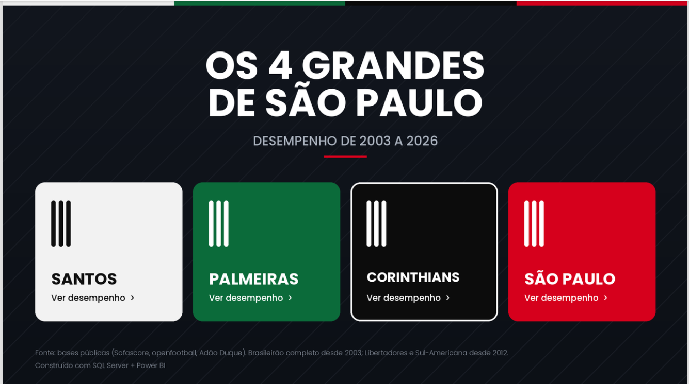
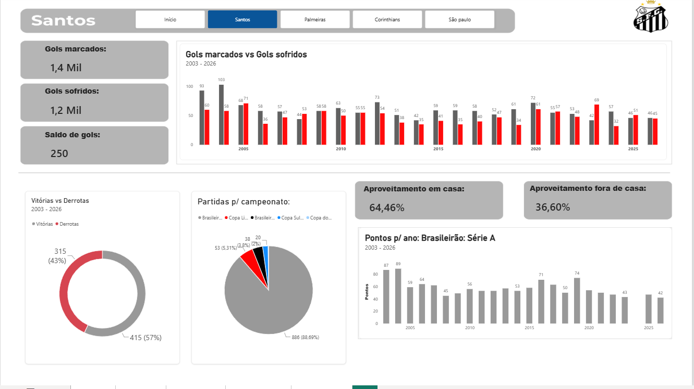
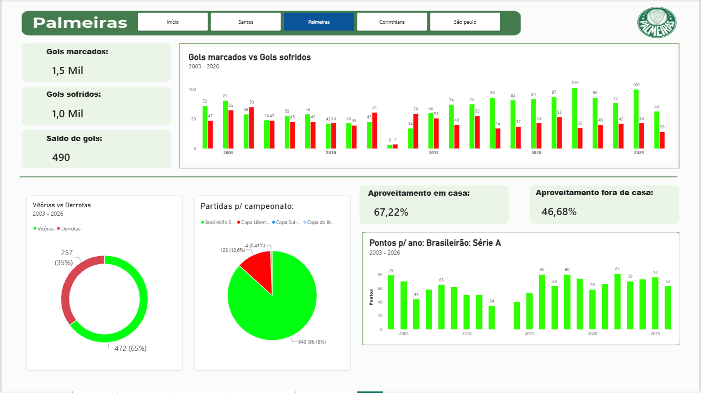
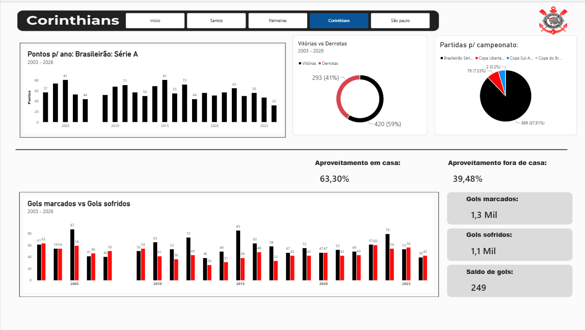
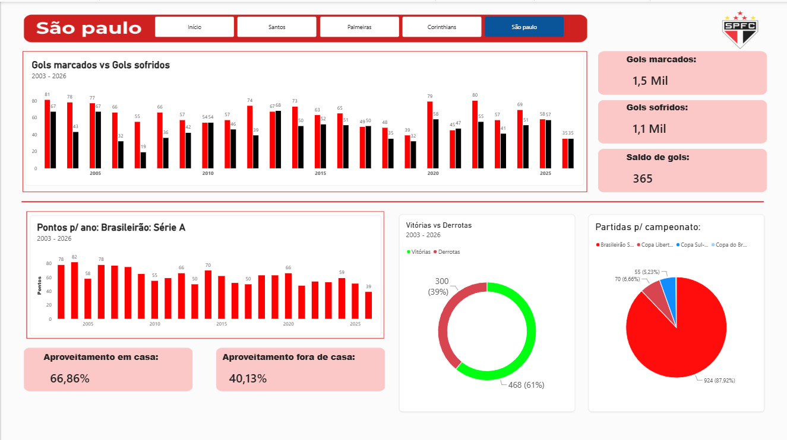

Os 4 grandes de São Paulo: desempenho de 2003 a 2026
Visão geral
Dashboard em Power BI, alimentado por um banco SQL Server que montei a partir de bases públicas. Compara Corinthians, Palmeiras, Santos e São Paulo em mais de 3.700 partidas finalizadas, com uma página por clube: gols marcados e sofridos por temporada, pontos no Brasileirão, aproveitamento em casa e fora, e resultados por competição.
O que o relatório mostra
Brasileirão Série A (2003 a 2026, a única competição com histórico completo), Libertadores (a partir de 2012) e Sul-Americana (a partir de 2012):
- O Palmeiras lidera o aproveitamento histórico (55,1%), seguido de São Paulo (53,1%), Corinthians (50,5%) e Santos (49,9%). O Palmeiras tem o melhor ataque (1,49 gol por jogo), enquanto o Santos tem a defesa mais vazada (1,22 sofridos por jogo, contra cerca de 1,09 dos rivais).
- O mando de campo pesa muito. Em casa, os quatro aproveitam entre 63% e 67% (Palmeiras 67,2%, São Paulo 66,9%, Santos 64,5% e Corinthians 63,3%). Fora, caem para 37% a 47%. O Palmeiras é o mais forte visitante (46,7%) e o Santos o mais fraco (36,6%). Esses valores são os dos cards do relatório, que consideram todas as competições da base.
- As melhores campanhas em aproveitamento: Corinthians em 2015 e Palmeiras em 2022 (71,1% cada, 81 pontos), São Paulo em 2006 (68,4%) e Santos em 2019 (64,9%). Entre as piores estão Palmeiras em 2012 (29,8%) e Santos em 2023 (37,7%).
- Usei aproveitamento, e não pontos brutos, para comparar temporadas, porque entre 2003 e 2005 o campeonato teve 42 ou 46 jogos por clube, o que inflaria os pontos.
Como os filtros funcionam
No Power BI, o filtro de clube é aplicado por página: cada uma das quatro páginas já nasce filtrada para um clube. Assim, as mesmas medidas DAX são reaproveitadas nas quatro páginas e se recalculam sozinhas para o clube da página, sem precisar duplicar nenhuma fórmula.
Limitações assumidas
O Paulistão e a Copa do Brasil ainda não estão na base, Libertadores e Sul-Americana começam em 2012, e a temporada 2026 está em andamento. Os clássicos entre os quatro aparecem uma vez para cada clube, então não se deve somar jogos entre eles. Nos gráficos de pontos por temporada, os anos sem barra são temporadas em que o clube não disputou a Série A (Corinthians em 2008, Palmeiras em 2013 e Santos em 2024).
Consulta SQL (view)
A view empilha os jogos de cada clube pela ótica do mandante e do visitante (UNION ALL) e depois agrega vitórias, empates, derrotas, gols e pontos por clube, ano, competição e mando:
CREATE OR ALTER VIEW dbo.v_desempenho_clubes AS
WITH jogos AS (
SELECT
clb.nome AS clube,
pt.temporada AS ano,
compe.nome AS competicao,
'casa' AS mando,
pt.gols_mandante AS gols_pro,
pt.gols_visitante AS gols_contra
FROM dbo.partidas pt
INNER JOIN dbo.clubes clb ON pt.mandante_id = clb.id
INNER JOIN dbo.competicoes compe ON pt.competicao_id = compe.id
WHERE clb.foco = 1
AND pt.[status] = 'finished'
UNION ALL
SELECT
clb.nome,
pt.temporada,
compe.nome,
'fora',
pt.gols_visitante,
pt.gols_mandante
FROM dbo.partidas pt
INNER JOIN dbo.clubes clb ON pt.visitante_id = clb.id
INNER JOIN dbo.competicoes compe ON pt.competicao_id = compe.id
WHERE clb.foco = 1
AND pt.[status] = 'finished'
)
SELECT
clube, ano, competicao, mando,
COUNT(*) AS jogos,
SUM(CASE WHEN gols_pro > gols_contra THEN 1 ELSE 0 END) AS vitorias,
SUM(CASE WHEN gols_pro = gols_contra THEN 1 ELSE 0 END) AS empates,
SUM(CASE WHEN gols_pro < gols_contra THEN 1 ELSE 0 END) AS derrotas,
SUM(gols_pro) AS gols_marcados,
SUM(gols_contra) AS gols_sofridos,
3 * SUM(CASE WHEN gols_pro > gols_contra THEN 1 ELSE 0 END)
+ SUM(CASE WHEN gols_pro = gols_contra THEN 1 ELSE 0 END) AS pontos
FROM jogos
GROUP BY clube, ano, competicao, mando;Medidas DAX
- jogos —
SUM(v_desempenho_clubes[jogos]): soma os jogos que sobraram depois dos filtros ativos (clube da página, ano do gráfico etc.). - pontos —
SUM(v_desempenho_clubes[pontos]): soma os pontos conquistados. - gols pro —
SUM(v_desempenho_clubes[gols_marcados]): soma os gols marcados. - gols contra —
SUM(v_desempenho_clubes[gols_sofridos]): soma os gols sofridos. - saldo gols —
[gols pro] - [gols contra]: calcula o saldo de gols reaproveitando as duas medidas anteriores. - Aproveitamento —
DIVIDE([pontos], 3 * [jogos]): divide os pontos conquistados pelo máximo possível (3 por jogo). ODIVIDEevita erro quando o denominador é zero. - Aproveitamento Casa —
CALCULATE([Aproveitamento], v_desempenho_clubes[mando] = "Casa"): recalcula o aproveitamento considerando só os jogos em casa. - Aproveitamento Fora — o mesmo cálculo, só com os jogos fora de casa (
mando = "Fora"). - pontos brasileirao —
CALCULATE([pontos], v_desempenho_clubes[competicao] = "Brasileirão Série A"): soma os pontos apenas do Brasileirão, para o gráfico de pontos por temporada ficar comparável entre os anos.
Print do relatório




